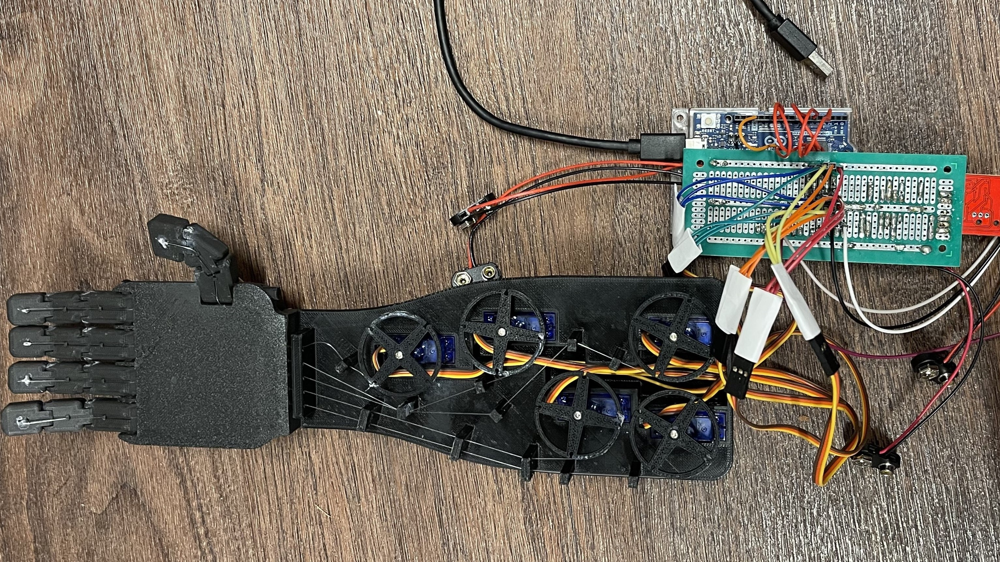

EMG-Controlled Bionic Hand
This innovative prosthetic device replicates natural hand movements by converting EMG signals from muscle activity into precise mechanical motion. Powered by MyoWare EMG sensors, an Arduino microcontroller, and five servo motors, the bionic hand provides lifelike articulation and responsiveness. An OLED display enhances usability by offering real-time feedback on muscle signals and system performance.
Combining advanced bio-signal processing, hardware design, and software development, this project demonstrates a functional and accessible solution for improving prosthetic technology.
